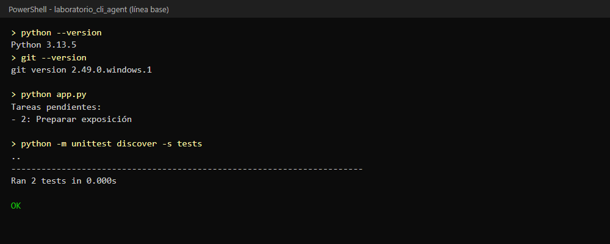
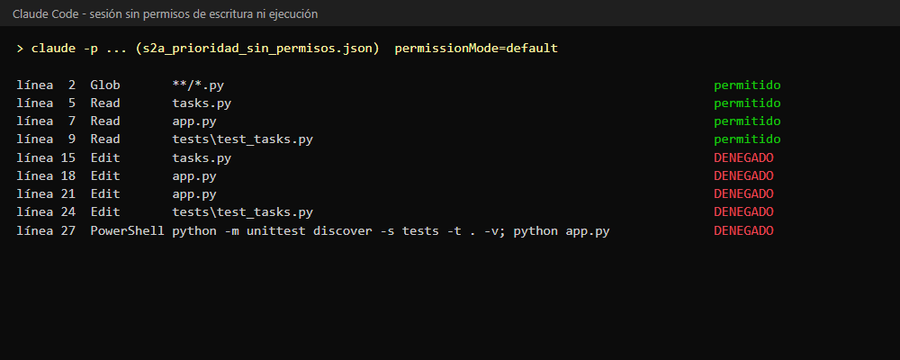
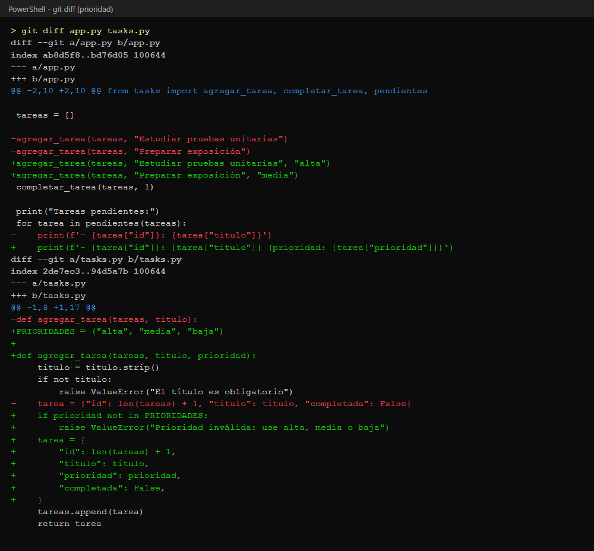
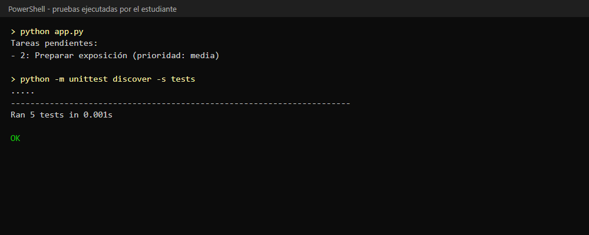
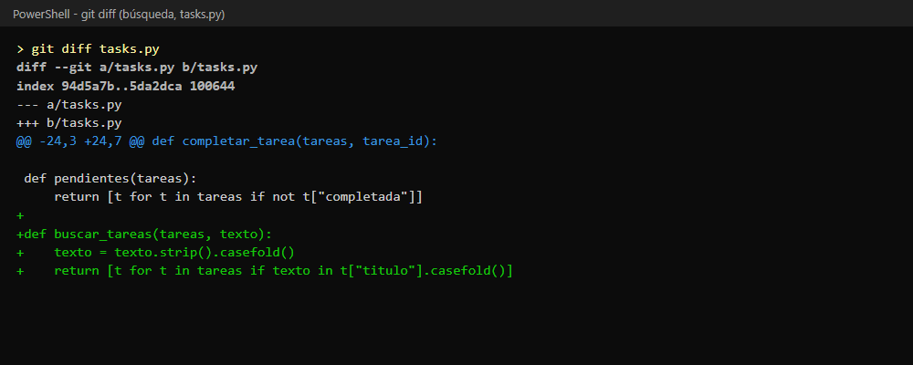
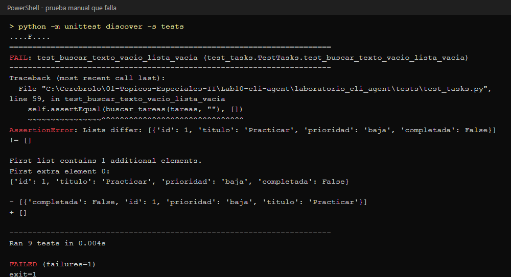
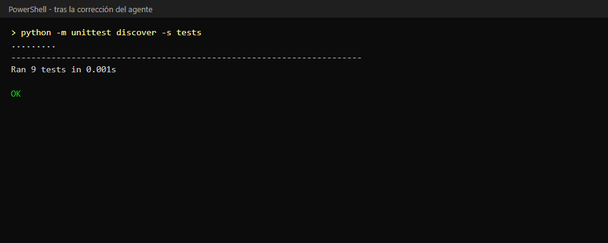
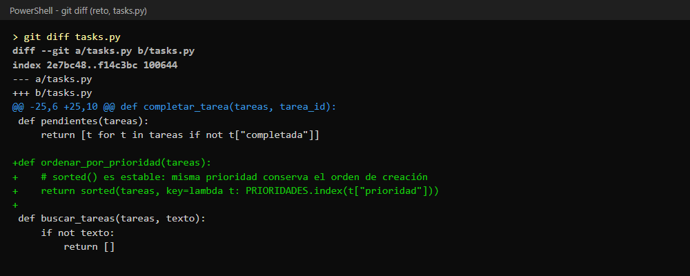
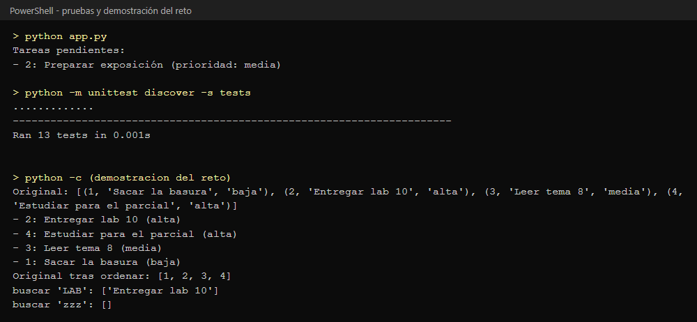
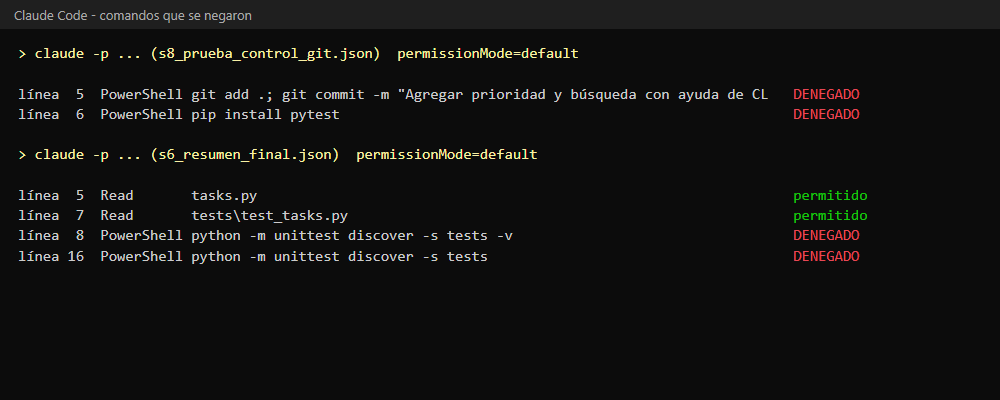

Facultad de Ingeniería de Sistemas Computacionales
Lic. en Desarrollo y Gestión de Software
Tópicos Especiales II
Laboratorio 10 — Modalidad CLI Agent
1GS241
Presentado por:
Ríos, Gerald (8-987-741)
Revisado por:
Profesor Regis Rivera
Fecha de entrega
29 / 10 / 2026
Índice
Introducción3
1. Requisitos locales y línea base3
1.1 Requisitos y herramienta3
1.2 Proyecto inicial y pruebas de partida4
2. Análisis inicial sin modificar archivos4
3. Primera tarea: prioridad5
3.1 Prompt y permisos solicitados5
3.2 Revisión del diff y pruebas propias6
4. Segunda tarea: búsqueda con alcance limitado8
4.1 Prompt y revisión del alcance8
4.2 Cambio que pedimos limitar9
4.3 Corrección basada en evidencia9
5. Explicación final del agente y decisión sobre el commit11
6. Reto final: ordenar por prioridad12
7. Registro de comandos solicitados13
8. Respuestas a las preguntas de reflexión15
Conclusiones17
Introducción
Este laboratorio trabaja la modalidad de agente en línea de comandos: un asistente que vive en la terminal, lee el proyecto, propone cambios, intenta ejecutar comandos y espera que nosotros decidamos qué se aprueba. El enunciado deja Codex CLI como ruta principal y acepta Claude Code como alternativa equivalente; usamos Claude Code (versión 2.1.312, modelo Sonnet 5.5) y conservamos el resto de los pasos tal como están.
Sobre un pequeño gestor de tareas en Python hicimos el análisis inicial, agregamos prioridad, agregamos búsqueda con el alcance acotado y cerramos con un reto propio, que fue ordenar por prioridad. En cada tarea revisamos el diff de Git y repetimos las pruebas a mano. Este informe sigue ese orden y adjunta las transcripciones, los JSON de cada sesión y las capturas de terminal. Las respuestas a las preguntas de reflexión y las conclusiones cierran el documento.
Una aclaración sobre el modo de trabajo. Para que todo quedara transcrito corrimos el agente en modo no interactivo (claude -p con salida stream-json), siempre con el modo de permisos por defecto: nunca usamos aprobación automática ni el modo que omite permisos. Como en ese modo no aparece el cuadro de aprobación de la interfaz, el procedimiento fue este: primero lanzábamos cada tarea con solo permisos de lectura, el agente intentaba editar y ejecutar, el sistema lo negaba y el JSON dejaba la lista exacta de lo que pidió. Con esa lista a la vista decidíamos qué aprobar y volvíamos a lanzar la sesión permitiendo únicamente eso. Es el mismo criterio de «leer la acción antes de aprobarla», aplicado con otro mecanismo.
1. Requisitos locales y línea base
1.1 Requisitos y herramienta
Comprobamos Python y Git desde la terminal. El agente quedó instalado y disponible como claude en el equipo de trabajo.
> python --version
Python 3.13.5
> git --version
git version 2.49.0.windows.1
> claude --version
2.1.312 (Claude Code)
1.2 Proyecto inicial y pruebas de partida
Creamos la carpeta laboratorio_cli_agent, ejecutamos git init y escribimos a mano tasks.py, app.py y tests/test_tasks.py, copiando el código del enunciado sin cambios. Antes de abrir el agente corrimos el programa y las pruebas para saber que todo funcionaba. La Figura 1 muestra el resultado de esa línea base.

Figura 1. Requisitos y pruebas de la línea base, antes de usar el agente: 2 pruebas en OK.
Con eso hicimos el commit de línea base con el mensaje que indica la guía, «Línea base del laboratorio CLI Agent» (hash e73d92f). Una diferencia con la guía: agregamos un .gitignore con __pycache__/ y *.pyc para que los archivos compilados no ensuciaran los diffs. También configuramos el nombre y el correo de Git solo dentro de este repositorio.
2. Análisis inicial sin modificar archivos
Abrimos el agente dentro de la carpeta del proyecto, con permisos únicamente de lectura (Read, Glob, Grep), y escribimos este prompt, que es el del enunciado:
Analiza este proyecto de Python.
Explícame:
1. qué hace cada archivo,
2. qué comportamiento cubren las pruebas,
3. qué riesgos ves en la forma de asignar los IDs.
No modifiques ningún archivo y no ejecutes instalaciones.
El agente leyó los tres archivos y el .gitignore (cinco llamadas de lectura en total, sin una sola petición de escritura ni de comandos) y git status quedó limpio al terminar. Esta es su explicación, resumida de la transcripción completa que va en la evidencia:
Archivos.tasks.py es la lógica: tareas como diccionarios dentro de una lista; agregar_tarea recorta el título y falla si queda vacío, y asigna id = len(tareas) + 1; completar_tarea busca por id; pendientes filtra. app.py es un script de demostración, no una CLI real, sin if __name__ == "__main__". tests/test_tasks.py tiene dos pruebas con unittest.
Cobertura. Solo el camino feliz: guardar el título con completada en False y completar una tarea. No se prueban el título vacío, el id inexistente, la mezcla de completadas con pendientes ni la asignación de ids.
Riesgo en los IDs.len(tareas) + 1 supone que la lista nunca pierde elementos. Con los ids 1, 2 y 3, si se borra el 1 y se agrega otra tarea, la nueva recibe el 3 y choca con la existente. Propone max(...) + 1 o un contador propio.
Contrastamos la explicación con el código real y es correcta en lo que afirma. Comprobamos además el riesgo con unas pocas líneas: creamos las tareas A, B y C, borramos la primera y agregamos D, y el resultado fue [(2, 'B'), (3, 'C'), (3, 'D')], con dos tareas con id 3 (evidencia en 15_verificaciones_extra.txt). La observación sobre tests/ sin __init__.py también es cierta y nos sirvió más adelante. No propuso cambios ni pidió instalar nada, así que no hubo nada que rechazar en este paso. El hallazgo de los IDs no entraba en el alcance de las tareas siguientes y lo dejamos anotado como riesgo pendiente.
3. Primera tarea: prioridad
3.1 Prompt y permisos solicitados
El prompt para implementar la prioridad fue el del enunciado, sin cambios:
Implementa prioridad para las tareas con los valores alta, media o baja.
Requisitos:
- agregar_tarea debe recibir una prioridad;
- prioridad inválida debe producir ValueError;
- app.py debe mostrar la prioridad;
- agrega o actualiza pruebas unitarias;
- no agregues dependencias externas;
- conserva el comportamiento actual de completar y listar pendientes;
- antes de terminar, ejecuta las pruebas.
En la primera corrida, con solo lectura, el agente leyó los tres archivos y pidió cuatro ediciones (una en tasks.py, dos en app.py, una en tests/test_tasks.py) y un comando de pruebas. Todo quedó denegado, no se tocó ningún archivo, y el agente explicó en prosa lo que haría. La Figura 2 muestra las seis peticiones tal como constan en el JSON.

Figura 2. Peticiones del agente en la corrida sin permisos de escritura ni de ejecución (JSON de la sesión).
Antes de aprobar leímos cada petición. Las ediciones tocaban solo los tres archivos que el requisito menciona y los textos nuevos eran los esperados: una constante PRIORIDADES, una validación y la prioridad dentro del diccionario. El comando era python -m unittest discover -s tests -t . -v; python app.py, dos comandos de solo lectura sobre nuestro código, sin instalaciones ni Git. Aprobamos las cuatro ediciones y los comandos de prueba (python -m unittest y python app.py). Una decisión de diseño la tomamos nosotros: el agente avisó de que «ALTA» sería inválida porque la prioridad distingue mayúsculas, y le indicamos que lo mantuviera, porque el enunciado habla de los valores alta, media o baja y no pide normalizar.
En la segunda corrida el agente aplicó las ediciones y lanzó el primer comando con -t ., que falló porque tests no es un paquete importable (lo comprobamos nosotros después con el mismo error). Lo reintentó sin esa opción y las pruebas pasaron. No creó __init__.py, que habría sido un archivo fuera de lo pedido, y ahí sí valoramos que se detuviera.
3.2 Revisión del diff y pruebas propias
Salimos del agente y corrimos git status y git diff. Se modificaron exactamente tres archivos: app.py, tasks.py y tests/test_tasks.py. La Figura 3 contiene el diff del código.

Figura 3. git diff de app.py y tasks.py tras la tarea de prioridad.
Lo que revisamos línea por línea fue lo siguiente. La firma pasó a agregar_tarea(tareas, titulo, prioridad) sin valor por defecto, lo que rompe las llamadas antiguas, pero era justo lo pedido («debe recibir una prioridad») y el agente actualizó las dos llamadas de app.py. La validación va después de la del título, de modo que el título vacío conserva su mensaje original. completar_tarea y pendientes no se tocaron. En las pruebas, las dos existentes solo cambiaron de firma, no se debilitó ninguna aserción, y se agregaron tres: prioridades válidas, prioridades inválidas ("urgente", "", None, "ALTA") y que pendientes excluya las completadas. Esta última no la pedíamos, pero es del mismo alcance y la dejamos. No encontramos nombres cambiados ni refactorizaciones.
Aunque el agente informó que las pruebas pasaban, las repetimos nosotros desde la terminal. La Figura 4 muestra el programa y las cinco pruebas en OK.

Figura 4. Ejecución propia después de la prioridad: la salida de app.py ya muestra la prioridad y pasan 5 pruebas.
4. Segunda tarea: búsqueda con alcance limitado
4.1 Prompt y revisión del alcance
Antes de pedir la búsqueda pusimos los cambios de prioridad en el área de preparación de Git (git add ., sin commit) para que el siguiente git diff mostrara solo lo nuevo. El prompt fue:
Agrega una función buscar_tareas(tareas, texto) que busque sin
distinguir mayúsculas y minúsculas.
Condiciones:
- modifica tasks.py y las pruebas necesarias;
- no cambies la estructura actual de las tareas;
- no cambies app.py todavía;
- no agregues paquetes;
- ejecuta las pruebas al finalizar.
Otra vez la primera corrida fue solo de lectura: tres ediciones denegadas. Al leer lo propuesto aprobamos las ediciones en tasks.py y en las pruebas, y los comandos de prueba. En el diff, app.py no aparece, la estructura de las tareas no cambió y no hay paquetes nuevos, así que el alcance se respetó. La función comparaba con casefold(), que para el español da el mismo resultado que lower(). Allí el agente informó además que python -m unittest a secas ejecuta cero pruebas con código de salida 5; lo verificamos y es cierto, porque sin discover no encuentra la carpeta tests.
4.2 Cambio que pedimos limitar
El diff traía una línea que no habíamos pedido: texto = texto.strip().casefold(). El enunciado solo pide ignorar mayúsculas y minúsculas; recortar espacios es un comportamiento nuevo que cambia el resultado de buscar, por ejemplo, " leer ". Las pruebas estaban en verde y nada de eso se habría notado sin leer el diff (Figura 5).

Figura 5. git diff de tasks.py tras la búsqueda; la línea con strip() es la que pedimos limitar.
Pedimos que se redujera el cambio a lo mínimo, con este prompt:
En buscar_tareas, la línea texto = texto.strip().casefold() recorta
espacios, y eso no lo pedí: solo pedí búsqueda sin distinguir
mayúsculas y minúsculas. Reduce el cambio: quita únicamente el strip()
y deja el resto igual (casefold, firma, pruebas). Hazlo en tasks.py y
ejecuta 'python -m unittest discover -s tests'. No toques otros
archivos ni uses git.
El agente hizo una sola edición, cambió esa línea por texto = texto.casefold(), y las siete pruebas siguieron en OK.
4.3 Corrección basada en evidencia
Para el paso de la prueba provocada agregamos a mano dos casos al final de tests/test_tasks.py: buscar un texto inexistente ("inexistente") y buscar el texto vacío (""), ambos esperando una lista vacía. El primero pasó. El segundo falló, como muestra la Figura 6, porque "" in "cualquier cadena" es verdadero en Python y la búsqueda devolvía todas las tareas.

Figura 6. Prueba agregada por nosotros que falla: la búsqueda vacía devuelve todas las tareas.
Siguiendo la guía, le entregamos al agente el mensaje exacto de la prueba (el bloque FAIL con el traceback completo) y le pedimos primero la causa, en modo solo lectura y sin tocar el código. Explicó lo anterior, propuso una guarda if not texto: return [] y dejó una decisión abierta: un texto de solo espacios seguiría la ruta normal. Esa decisión era nuestra y la resolvimos en contra de normalizar: si ya quitamos el strip() por no estar pedido, tampoco vamos a reintroducirlo por otra vía. Aprobamos solo la guarda. La Figura 7 muestra las nueve pruebas en OK, con las dos nuestras incluidas y sin haber modificado ninguna aserción.

Figura 7. Mismas pruebas después de que el agente aplicó la guarda: 9 pruebas en OK.
5. Explicación final del agente y decisión sobre el commit
Pedimos al agente un resumen de lo que hizo en la sesión: archivos, decisiones, pruebas y riesgos pendientes, con la instrucción de verificar contra el estado real del repositorio. Lo comparamos con el diff y con los archivos. Los archivos y las decisiones coinciden con lo que vimos (casefold en lugar de lower, sin strip, guarda para la cadena vacía, app.py intacto) y el conteo de pruebas, 0 con unittest a secas, 7 y luego 9 con discover, también. El agente intentó volver a correr las pruebas para verificar y se lo negamos, porque esa validación la hacemos nosotros; por eso en su respuesta aclaró que su única verificación disponible era la última corrida de nueve pruebas. Lo que más nos sirvió fueron los riesgos que dejó señalados: buscar_tareas(tareas, None) devuelve [] en vez de fallar, un número como texto lanza AttributeError, " " no se trata como vacío y python -m unittest sin discover no corre nada. De esos cuatro, el de None lo dejamos anotado como decisión pendiente; los demás ya los conocíamos.
Con el resultado revisado, la decisión fue conservar todo. El commit lo hacemos nosotros y no el agente. En la prueba de control (Figura 10) le pedimos que lo hiciera y el sistema de permisos lo negó, de modo que el historial sigue limpio. Los comandos que ejecutamos para cerrar son:
git add .
git commit -m "Agregar prioridad y búsqueda con ayuda de CLI Agent"
El git add . quedó hecho antes del reto, como se cuenta en la sección siguiente, así que el commit recoge solo prioridad y búsqueda (app.py, tasks.py y tests/test_tasks.py, 67 líneas agregadas y 8 quitadas), y las nueve pruebas de ese estado pasan. El historial quedó así:
$ git log --oneline
fabe271 Agregar prioridad y búsqueda con ayuda de CLI Agent
e73d92f Línea base del laboratorio CLI Agent
6. Reto final: ordenar por prioridad
Elegimos ordenar por prioridad. Nos pareció la mejora que mejor aprovecha lo que ya existe: la constante PRIORIDADES da el orden y el reto obliga al agente a respetar dos propiedades fáciles de romper, que son no mutar la lista original y mantener el orden de creación entre tareas de igual prioridad. Antes de lanzarlo volvimos a preparar los cambios previos con git add . para aislar el diff. El prompt, con alcance, restricciones y pruebas explícitas, fue:
Agrega una función ordenar_por_prioridad(tareas) que devuelva una lista
nueva con las tareas ordenadas de prioridad alta a baja (alta, media,
baja).
Condiciones:
- modifica solo tasks.py y tests/test_tasks.py;
- no modifiques la lista original ni la estructura de las tareas;
- las tareas con la misma prioridad conservan su orden de creación;
- no cambies app.py ni agregues paquetes;
- agrega pruebas unitarias (orden correcto, estabilidad, lista original
intacta, lista vacía);
- ejecuta python -m unittest discover -s tests al finalizar.
El agente pidió dos lecturas, tres ediciones y un comando de pruebas, todo dentro de lo autorizado. La implementación es una línea con sorted() y la posición de cada prioridad dentro de PRIORIDADES como clave. Revisamos que sorted devuelve una lista nueva y es estable, que no hay cambios en app.py y que las cuatro pruebas piden lo que le pedimos (Figura 8). Un detalle que dejamos como riesgo: si una tarea no trae una prioridad válida, la función lanza ValueError al buscar el índice; con tareas creadas por agregar_tarea eso no ocurre.

Figura 8. git diff de tasks.py con la función del reto. Las cuatro pruebas nuevas van en tests/test_tasks.py.
Ejecutamos las pruebas y una demostración manual con cuatro tareas de prioridades mezcladas. Pasan las trece pruebas, el orden resultó ser alta, alta, media, baja con las dos altas en su orden de creación, y la lista original quedó con los ids 1, 2, 3 y 4 sin cambios (Figura 9).

Figura 9. Ejecución propia después del reto: 13 pruebas en OK y demostración del orden y de la lista intacta.
7. Registro de comandos solicitados
La Tabla 1 resume lo que el agente intentó ejecutar o editar en cada sesión y qué decidimos. La columna de evidencia remite al archivo JSON de la sesión y a la línea donde consta la petición; la lista completa, con las lecturas, está en evidencia/sesiones/RESUMEN_SESIONES.md. En ninguna sesión el agente trabajó con aprobación automática: el campo permissionMode de cada JSON dice default.
Tabla 1. Acciones solicitadas por el agente y decisión tomada
Acción solicitada
Decisión
Motivo
JSON : línea
Read, Glob de los archivos del proyecto (análisis inicial)
Aprobado
Solo lectura, es lo que se pidió
s1 : 2–11
Edit tasks.py, app.py (x2) y tests/test_tasks.py para la prioridad
Rechazado en la primera corrida; aprobado después de leer la propuesta
Rechazado en la primera corrida; aprobado el subconjunto python -m unittest y python app.py
Solo ejecuta nuestro código; sin instalaciones ni Git
s2a : 27 / s2b : 11–17
Edit tasks.py y tests/test_tasks.py para la búsqueda (3 ediciones)
Rechazado en la primera corrida; aprobado después
Dentro del alcance; app.py no figuraba
s3a : 8–14 / s3b : 2–6
python -m unittest y ... discover -s tests -v
Aprobado
Pruebas del propio proyecto
s3b : 9, 14
Edit: quitar strip() de buscar_tareas
Aprobado (era lo que pedimos)
Reduce el cambio al alcance
s4 : 2
Edit: guarda if not texto
Aprobado tras el diagnóstico
Arreglo mínimo en la implementación; la prueba no se tocó
s5b : 2
python -m unittest discover -s tests (verificación del resumen final, dos veces)
Rechazado
La validación la hacemos nosotros
s6 : 8, 16
Edit tasks.py y tests (3 ediciones) y pruebas del reto
Aprobado
Dentro del alcance declarado en el prompt
s7 : 7–14
git add .; git commit -m "Agregar prioridad y búsqueda con ayuda de CLI Agent"
Rechazado
El commit es decisión del estudiante
s8 : 5
pip install pytest
Rechazado
Dependencia externa que el laboratorio prohíbe
s8 : 6
Una precisión sobre las dos últimas filas. El agente no intentó por su cuenta hacer un commit ni instalar paquetes durante las tareas reales. Esa sesión (s8) la provocamos nosotros, a propósito, como prueba de control: le pedimos el commit y la instalación para comprobar que el modo por defecto los bloquea. Los bloqueó, el historial de Git sigue con el único commit de línea base y no se instaló nada (Figura 10). Un detalle que nos llamó la atención: sin que se lo pidiéramos, el agente agregó a su mensaje de commit una línea de coautoría. Otra razón para hacer nosotros el commit.

Figura 10. Comandos negados: la prueba de control (commit y pip install) y las pruebas del resumen final.
8. Respuestas a las preguntas de reflexión
8.1 ¿Qué diferencia principal observó entre un CLI Agent y un Editor con IA?
En el editor con IA la propuesta aparece dentro del archivo, como un diff que aceptamos o rechazamos en el sitio, y el agente casi nunca sale de lo que está abierto. En el CLI Agent el trabajo es de tipo encargo: se le pide una tarea completa, él decide qué archivos abrir, edita varios y quiere ejecutar comandos. Eso desplaza nuestra atención, porque ya no revisamos una sugerencia puntual sino un conjunto de acciones, y nos obliga a mirar fuera del agente (Git, las pruebas) para saber qué pasó.
8.2 ¿Qué ventaja ofrece que el agente pueda ejecutar comandos y pruebas desde la terminal?
Se corrige a sí mismo antes de entregarnos algo. En la prioridad ejecutó el comando de pruebas, falló por el -t ., y lo reintentó bien sin que interviniéramos. En la búsqueda descubrió por su cuenta que python -m unittest sin discover no corre nada, algo que habría pasado inadvertido si solo hubiera escrito código. La ventaja es real, pero lo que ejecuta es una afirmación suya y no un certificado: por eso repetimos cada corrida a mano.
8.3 ¿Qué riesgo aparece si se aprueban todos los comandos automáticamente?
El agente deja de pasar por nuestro criterio justo en las acciones difíciles de deshacer. En nuestras sesiones, cuando probamos el control, intentó hacer el commit y añadió una línea de coautoría que no pedimos, e intentó instalar pytest, una dependencia que el laboratorio prohíbe. Con aprobación automática ambos comandos habrían corrido. Y en las tareas normales, un strip() que no pedimos y una función sin la guarda habrían entrado al historial sin que nadie los mirara.
8.4 ¿Por qué git diff es importante, aunque las pruebas pasen?
Porque las pruebas solo dicen lo que alguien pensó en probar. El strip() de la búsqueda pasó todas las pruebas y aun así era un comportamiento que no pedimos; la búsqueda vacía devolvía todas las tareas y ninguna prueba del agente lo detectaba, y solo apareció porque agregamos un caso propio. El diff muestra el alcance real (qué archivos y qué líneas), y las pruebas muestran únicamente si el comportamiento esperado se mantiene.
8.5 ¿En qué momento del laboratorio la decisión humana fue más importante que la generación de código?
En el diagnóstico de la búsqueda vacía. El código de la guarda es una línea y el agente la escribió bien, pero había que decidir qué debía significar buscar un texto vacío y qué hacer con los espacios, y esa fue una decisión de producto, no de programación. Además fue la ocasión en que dijimos «la prueba es correcta» y exigimos arreglar la implementación en lugar de ajustar la prueba. También pesó la decisión de rechazar el comando de verificación del resumen final: el agente quería confirmar sus propias pruebas, y preferimos hacerlo nosotros.
Conclusiones
El flujo completo funcionó y el agente respetó el alcance en las tres tareas. No tocó app.py cuando se le dijo que no lo hiciera, no creó archivos no pedidos y se detuvo ante un comando que no se le había autorizado. Las pruebas pasaron de 2 en la línea base a 5 con la prioridad, 7 con la búsqueda, 9 con los casos manuales y 13 con el reto, y las repetimos todas desde nuestra terminal.
Lo que sí necesitó intervención humana fue poco pero concreto: el strip() que no pedimos, la búsqueda vacía que devolvía todo y el comando de verificación que no aprobamos. Dos cosas quedaron a medias. Una es el commit final, que le corresponde al estudiante y cuyos comandos exactos están en el informe. La otra es la forma de aprobar: como corrimos el agente en modo no interactivo, las aprobaciones se tomaron al volver a lanzar cada sesión con la lista de permisos y no pulsando «sí» en un cuadro de la interfaz. Quedan también como riesgos abiertos los IDs duplicados al borrar, que comprobamos que son reales, y el manejo de None y de textos con espacios en la búsqueda.